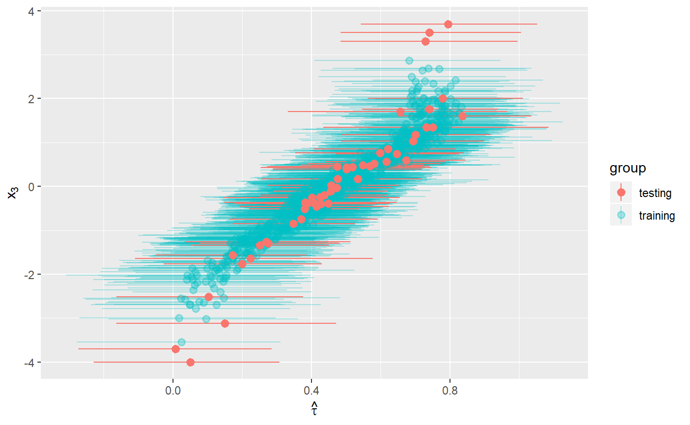

Prediction with BCF
02_predict-example.RmdIn this vignette, we show how to use the bcf package to fit a model and use the fitted object to predict estimates for new data.
To fit the model to simulated data, we follow the same process as in the “Simple Example” vignette. For that reason, we do not show the data generation and model fitting steps here.
Predicting using BCF
We now use a separate set of covariate values for prediction. First, we generate a testing dataset. We make sure to include some values outside the range of our training dataset, to allow us to gauge out-of-sample error.
## Testing data
n_test = 50
x_test <- matrix(rnorm(n_test*p), nrow=n_test)
special_x3 <- c(-4, -3.7, 3.3, 3.5, 3.7)
x_test[ (n_test - length(special_x3) + 1 ):n_test,3] <- special_x3 # including some X3s outside of range
mu_pred <- -1*(x_test[,1]>(x_test[,2])) + 1*(x_test[,1]<(x_test[,2])) - 0.1
pi_pred <- pnorm(mu_pred)
z_pred <- rbinom(n_test,1, pi_pred)We now use these data to generate predictions based on our model.
pred_out = predict(bcfObj=bcf_out,
x_predict_control=x_test,
x_predict_moderate=x_test,
pi_pred=pi_pred,
z_pred=z_pred,
save_tree_directory = '..')
#> Initializing BCF Prediction
#> Starting PredictionComparison
Let’s compare the results for our training and testing data. We will show the estimated treatment effects for training and test observations as a function of \(x_3\), which is an effect modifier.
lower <- c(apply(bcf_out$tau, 2, quantile, 0.025), apply(pred_out$tau, 2, quantile, 0.025))
upper <- c(apply(bcf_out$tau, 2, quantile, 0.975), apply(pred_out$tau, 2, quantile, 0.975))
group <- factor(c(rep("training", n), rep("testing", n_test)))
ggplot(NULL, aes(x = c(x[,3], x_test[,3]),
y = c(colMeans(bcf_out$tau), colMeans(pred_out$tau)),
alpha = group,
color = group)) +
geom_pointrange(aes(ymin = lower, ymax = upper)) +
scale_alpha_discrete(range = c(1.0, 0.3)) +
xlab(TeX("$x_3$")) +
ylab(TeX("$\\hat{\\tau}$")) +
coord_flip()
#> Warning: Using alpha for a discrete variable is not advised.
The estimates for testing observations have treatment effects well within the range of the treatment effects for training observations, even though the test data set contains more extreme values of \(x_3\). It is reassuring that these observations’ treatment effect estimates still fall within the expected range, suggesting that this model is not overly vulnerable to out-of-sample prediction error.
Marginal effects
We can use predict() to compute mean marginal effects, in other words the effect of a given covariate averaged across the levels of all other covariates (which corresponds to an estimate from a standard parametric regression). We provide an example using subgroups discussed in the “Simple Example” vignette. Specifically, we compare the mean marginal effects for the average value of \(x_3\) in the bottom quartile and the average value of \(x_3\) in the top quartile.
# Computing the average X3 values in Q1 and Q4 for prediction
q1Bar <- mean(x[,3][x[,3] < quantile(x[,3], 0.25)])
q4Bar <- mean(x[,3][x[,3] > quantile(x[,3], 0.75)])
# Creating training datasets with new X3 values
x_low <- x; x_high <- x
x_low[,3] <- q1Bar
x_high[,3] <- q4Bar
pred_low = predict(bcfObj=bcf_out,
x_predict_control=x_low,
x_predict_moderate=x_low,
pi_pred=pi,
z_pred=z,
save_tree_directory = '..')
#> Initializing BCF Prediction
#> Starting Prediction
pred_high = predict(bcfObj=bcf_out,
x_predict_control=x_high,
x_predict_moderate=x_high,
pi_pred=pi,
z_pred=z,
save_tree_directory = '..')
#> Initializing BCF Prediction
#> Starting PredictionNow that we have our predictions, we look at the posterior distribution of the mean marginal treatment effect for each group.
# Computing weighted means to get distribution of posterior average estimates
lowDist <- apply(pred_low$tau, 1, weighted.mean, weights)
highDist <- apply(pred_high$tau, 1, weighted.mean, weights)
distDF <- data.frame(taus = c(lowDist, highDist),
Group = factor(c(rep(paste0("X3 = ", round(q1Bar, 1)), length(lowDist)), rep(paste0("X3 = ", round(q4Bar, 1)), length(highDist)))))
ggplot(distDF, aes(taus, group = Group, color = Group, fill = Group)) +
geom_density(alpha = 0.7) +
xlab(TeX("$\\tau$"))
We see that the posterior distributions of the mean marginal treatment effect for the two groups barely overlap. We can confirm this by computing the probability that the mean marginal treatment effect for the top units (\(x_3 =\) 1.3) is greater than the mean marginal treatment effect for the bottom units ((\(x_3 =\) -1.3)).
mean(highDist > lowDist)
#> [1] 1We found that there is a 100 percent probability that the mean marginal treatment effect for top-quartile units is greater than that for bottom-quartile units.